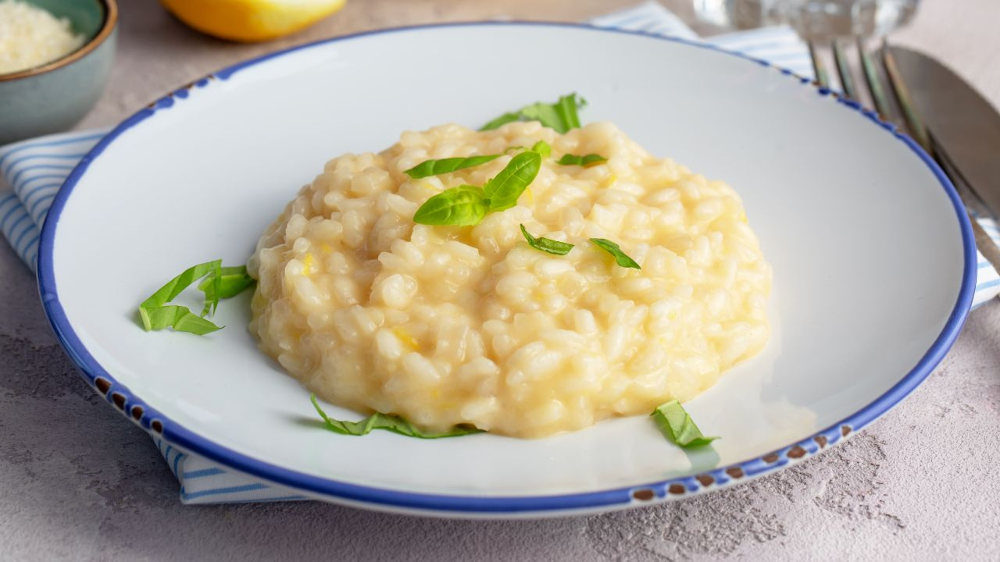
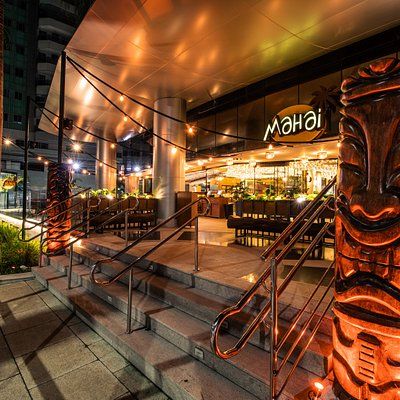

Bem-vindo ao Blog de Gastronomia!
Este blog é dedicado aos apaixonados por comida. Aqui você encontra receitas incríveis, dicas de restaurantes e curiosidades deliciosas do mundo da culinária!
Destaques:

Receitas: Pratos simples e sofisticados para todos os gostos.

Restaurantes: Dicas de lugares incríveis para comer bem.